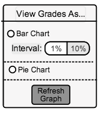

2.6.1 Graph View
When in the Stats and Graphs view, the grader has an option to see the grade breakdown in a bar chart or a pie chart. The grader can select the type of chart in a radio group seen in Figure 2.6.1 A.

Figure 2.6.1 A: Graph Type Radio Group.
The grader will click on the radio button 'Bar Chart' to see a bar chart view, or on 'Pie Chart' to see a pie chart view. If the grader selects 'Bar Chart', the grader must then choose between having between 1% or 10% granularity for the grades in the chart. After the grader selects the type of graph, they press the 'Refresh Graph' button to have the type of graph be updated. Figures 2.6.2 B and 2.6.2 C show what the bar chart looks like, and Figure 2.6.2 D shows what the pie chart looks like to the grader.
Figure 2.6.1 B: Bar Chart View with 10% Granularity.
The figure above shows the number of students who received each letter grade, allowing the grader to have a visual idea of the grade distribution for that assignment/quiz/test. The above figure has 10% intervals, where as in Figure 2.6.1 C below there are 1% invervals.
Figure 2.6.1 C: Bar Chart View with 1% Granularity.
The figure above is similar to Figure 2.6.1 B, but with 1% intervals instead of 10% intervals. The grader may prefer this view if they want to see specifically if there were more plus or minus grades for a certain letter grade.
Figure 2.6.1 D: Pie Chart View.
The figure above gives the grader a visual representation of the grade distribution with a pie chart.
Prev: Stats and Graphs View
| Next: View Statistics
| Up: Stats and Graphs View
| Top: index